ВЕДОМСТВЕННЫЕ СТРОИТЕЛЬНЫЕ НОРМЫ
ПРОЕКТИРОВАНИЕ И УСТРОЙСТВО ФУНДАМЕНТОВ
ИЗ ЦЕМЕНТОГРУНТА ДЛЯ МАЛОЭТАЖНЫХ
СЕЛЬСКИХ ЗДАНИЙ
ВСН 40-88
(Взамен ВСН 4-71)
ГОСУДАРСТВЕННЫЙ АГРОПРОМЫШЛЕННЫЙ КОМИТЕТ СССР
Отдел по капитальному строительству и реконструкции
МОСКВА-1988
РАЗРАБОТАНЫ:
ВНИИОСПом им. Н.М. Герсеванова Госстроя СССР; ЦНИИЭПсельстроем; Краснодарагропромстроем; Кубанским сельскохозяйственным институтом; НИИСПом Госстроя УССР, ГПИфундаментпроектом; ВНИПКИстройиндустрия; ЦНИИЭПграждансельстроем
ВНЕСЕНЫ:
Центральным научно-исследовательским, экспериментальным и проектным институтом по сельскому строительству (ЦНИИЭПсельстроем) Госагропрома СССР
Директор института Л.Н. Ануфриев
СОГЛАСОВАНЫ: Госстроем СССР (Письмо от 07 января 1988 г. за № АГ-76-8)
УТВЕРЖДЕНЫ:
Отделом по капитальному строительству и реконструкции Госагропрома СССР
Заместитель Председателя Госагропрома СССР В.Д. Даниленко
Введены в действие с 1 марта 1988 г.
ИСПОЛНИТЕЛИ: доктор технических наук, проф. Б.А. Ржаницын, кандидаты технических наук Ю.А. Грачев, А.Н. Токин (руководитель темы), А.В. Шапошников (ответственный исполнитель), инженер М.Ю. Трушинский - ВНИИОСП им. Н.М. Герсеванова; кандидат технических наук Н.В. Жуков (руководитель темы) - ЦНИИЭПсельстрой; инженеры В.Н. Добровольский, В.Н. Щеглов - Краснодарагропромстрой; доктор технических наук К.Ш. Шадунц, кандидат технических наук А.И. Ветштейн, Н.И. Кочнев - Кубанский сельскохозяйственный институт; кандидат технических наук В.С. Могильный, Е.А. Фокин - НИИСП; кандидат технических наук Б.С. Смолин, инженер В.И. Шароватов - ГПИфундаментпроект; кандидат технических наук Н.И. Орда - ВНИПКИстройиндустрия; кандидат технических наук Е.Ф. Дуранов, В.А. Булгаков - ЦНИИЗПграждансельстрой.
С введением в действие ВСН 40-88 "Проектирование и устройство фундаментов из цементогрунта для малоэтажных сельских зданий" утрачивает силу ВСН 4-71 "Временные указания по устройству коротких грунтобетонных свай для малоэтажных сельских зданий".
Замечания и предложения следует направлять по адресу: 109389, Москва, 2-я Институтская ул., 6, ВНИИОСП, лаборатория закрепления грунтов.
143360, г. Апрелевка Московской области, ул. Апрелевская, 65,
ЦНИИЭПсельстрой, лаборатория оснований и фундаментов.
|
Государственный агропромышленный комитет СССР (Госагропром СССР) Отдел по капитальному строительству и реконструкции |
Ведомственные строительные нормы |
ВСН 40-88 |
|
|
Проектирование и устройство фундаментов из цементогрунта для малоэтажных сельских зданий |
|||
|
Взамен
|
|
Настоящие Нормы распространяются на проектирование и устройство фундаментов из цементогрунта (свайных с длиной свай до 3 м и диаметром до 0,8 м и ленточных с глубиной заложения до 2 м) для малоэтажных сельских зданий.
Настоящие Нормы не распространяются на проектирование и устройство фундаментов из цементогрунта, возводимых в сейсмических и карстовых районах, в районах распространения вечномерзлых грунтов, на подрабатываемых территориях, в просадочных грунтах II типа с просадкой от собственного веса грунта более 15 см, фундаментов под машины с динамическими нагрузками, а также фундаментов каркасных зданий, воспринимающих горизонтальные нагрузки и моменты.
1. Общие положения
1.1. Проектирование и устройство фундаментов из цементогрунта осуществляется на основании требований действующих нормативных документов с учетом положений настоящих Норм.
1.2. Фундаменты из цементогрунта следует применять при возведении сельских зданий и сооружений с несущими стенами III класса ответственности, а также II класса высотой до двух этажей включительно.
1.3. Состав и объем инженерно-геологических изысканий устанавливается в соответствии с требованиями СНиП 1.02.07-87.
|
Внесены ЦНИИПЭПсельстроем Госагропрома СССР |
Утверждены
Государственным агропромышленным комитетом СССР |
Срок
введения в действие |
1.4. Основным работам по устройству фундаментов из цементогрунта должны предшествовать опытные (пробные) работы.
1.5. Опытные работы следует выполнять по программе, учитывающей гидрогеологические условия площадки, механизмы, вяжущие материалы и способы изготовления, предусмотренные проектом выполнения основных работ, а также требования настоящих Норм.
1.6. Результаты опытных работ фиксируются актом, в котором указываются данные, позволяющие регламентировать технологию изготовления, обеспечивать требуемые показатели качества и сроки выполнения работ. На основании результатов опытных работ должна быть откорректирована (при необходимости) рабочая документация до начала основных работ.
1.7. Фундаменты из цементогрунта изготавливаются:
буросмесительным способом, который предусматривает выполнение процессов измельчения грунта и его перемешивания с вяжущим, водой или их смесью непосредственно в грунтовом массиве;
укладкой цементогрунтовой смеси, приготовленной в смесительных установках, в пробуренные скважины или вскрытые траншеи с последующим ее уплотнением.
2. Требования к материалам
2.1. При устройстве фундаментов из цементогрунта пылевато-глинистые грунты должны удовлетворять следующим требованиям (гранулометрический состав и другие показатели приводят в соответствие требованием ГОСТ 25100-82):
содержание частиц размером менее 0,005 мм - 5-30%, размером 0,005-0,05 - 15-90%;
число пластичности Jр =1-15%;
водородный показатель грунта рH>6;
содержание легко- и среднерастворимых солей £ 3%, при сульфатном засолении - не более 2%;
относительное содержание органических примесей - до 0,06.
Примечание. Фундаменты из цементогрунта допускается устраивать при соответствующем обосновании в пылевато-глинистых грунтах с числом пластичности Jp>5 и песчаных грунтах.
2.2. Грунты, не отвечающие требованиям п.2.1 по гранулометрическому составу и пластичности, могут быть улучшены путем введения песка или глины, а для понижения кислотности - введением извести (1-2%).
2.3. Для устройства фундаментов из цементогрунта следует применять портландцемент или шлакопортландцемент марок ПЦ-400-Д-20; ШПЦ-400-Д-20, а также цементы указанных марок быстротвердеющие (Б), пластифицированные (ПЛ) и гидрофобизированные (ГФ), отвечающие требованиям ГОСТ 10178-85.
2.4. Вода для приготовления цементного раствора должна отвечать требованиям ГОСТ 23732-79.
2.5. Для улучшения свойств цементогрунта допускается применение добавок, назначение и дозировки которых приведены в рекомендуемом приложении 1.
3. Требования к цементогрунту
3.1. Для устройства оснований и фундаментов предусматривается цементогрунт классов по прочности на сжатие: В2,5; В3,5; В5; В7,5; В10 и марок по морозостойкости: F 25; F 35; F 50.
3.2. Класс цементогрунта по прочности на сжатие определяется как для тяжелого бетона по ГОСТ 18105-06 на образцах в возрасте 90 дней.
Определение прочности цементогрунта на сжатие допускается производить на образцах-цилиндрах: d = 50 мм, h = 50 мм с переходным по отношению к стандартному кубику размером 150´150´150 мм, коэффициентом 0,7.
Допускается определение класса по прочности цементогрунта на
образцах в возрасте 28 суток умножением 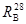
Допускается предварительная оценка прочности на одноосное сжатие на образцах, прошедших тепловлажностнyю обработку (ТВО) по режиму: 2 + 10 + 2 ч (подъем - выдержка снижение температуры) при температуре 85-90оС. Образцы цементогрунта должны поступать на пропарку не ранее, чем через сутки после их изготовления. Испытания выполняются не ранее чем через двое суток после ТВО.
3.3. Значения нормативного и расчетного сопротивления цементогрунта осевому сжатию приведены в табл. 1.
Таблица 1
|
Нормативные Rbn и расчетные Rb сопротивления цементогрунта при его классе по прочности на сжатие, МПа |
|||||
|
В2,5 |
В3,5 |
В5 |
В7,5 |
В10 |
|
|
Сжатие осевое Rbn |
1,9 |
2,7 |
3,8 |
5,7 |
7,6 |
|
(призменная прочность) Rb |
1,4 |
1,9 |
2,7 |
4,1 |
5,4 |
3.4. Марка цементогрунта по морозостойкости определяется на образцах в возрасте 90 суток в соответствии с требованиями ГОСт 10060-86.
3.5. Состав цементогрунта следует подбирать в лаборатории и корректировать по результатам опытных работ согласно требованиям п. 6.11-6.17.
4. Проектирование свайных и ленточных фундаментов из цементогрунта
4.1. Расчет и проектирование фундаментов из цементогрунтовых свай длиной до 3 м следует выполнять в соответствии с указаниями СНиП 2.02.03-85 и дополнительными требованиями настоящего раздела.
4.2. Несущая способность цементогрунтовой сваи Fd , кН определяется по формуле
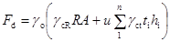
где gо - коэффициент условий работы сваи, принимаемый равным 1, а для просадочных грунтов по указаниям п.4.7-4.10;
R - расчетное сопротивление грунта под нижним концом сваи, кПа, принимаемое по табл. 22 СНиП 2.02.03-85, для просадочных грунтов по указаниям п.4.7-4.10;
А - площадь опирания сваи на грунт, м2;
u - периметр поперечного сечения сваи, м;
gcR, gct - коэффициенты условий работы грунта под пятой и на боковой поверхности сваи, принимаемые равными gcR = 0,8, gct = 1;
hi - толщина i-гo слоя грунта, соприкасающегося с боковой поверхностью сваи, м;
ti - расчетное сопротивление i-го слоя грунта по боковой поверхности сваи, кПа, принимаемое по табл. 21 и указаниям п. 13.4 СНиП 2.02.03-85, а для просадочных грунтов по указаниям п.4.7-4.10.
4.3. Нагрузка на 1 пог.м ленточного фундамента не должна превышать:
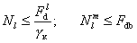
где 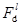
gк - коэффициент надежности по СНиП 2.02.03-85;
Fdb - несущая способность 1 пог.м ленточного фундамента по материалу, определяемая по указаниям п.4.5.
4.4. Несущая способность грунта основания 1 пог.м ленточного фундамента определяется по формуле
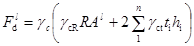
где - то же, что в п.4.2;
R - расчетное сопротивление грунта под подошвой ленточного фундамента, кПа, принимаемая по табл. 22 СНиП 2.02.03-85;
Al - площадь подошвы 1 пог.м ленточного фундамента, м2;
gcR, gct - коэффициенты условий работы грунта под подошвой и на боковой поверхности ленточного фундамента, принимаемые равными gcR = 0,8, gct = 1;
hi - толщина i-гo слоя грунта, соприкасающегося с боковой поверхностью ленточного фундамента, м;
ti - расчетное сопротивление i-го слоя грунта по боковой поверхности ленточного фундамента, кПа, принимаемое по табл. 21 и указаниям п.13.4 СНиП 2.02.03-85.
4.5. Несущая способность цементогрунтовой сваи или ленточного фундамента по материалу, работающих на сжимающую нагрузку, определяется по формуле
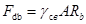
где gсв - коэффициент условий работы сваи ленты по материалу, принимаемый равным 0,85;
A - площадь опирания (поперечного сечения) сваи или площадь подошвы 1 пог.м ленточного фундамента, м;
Rb - расчетное сопротивление цементогрунта осевому сжатию, Мпа, принимаемое по табл. 1 для соответствующего класса цементогрунта по прочности на сжатие.
4.6. Проектирование малонагруженных фундаментов (нагрузка на 1 пог.м стены менее 150 кН) в грунтовых условиях I и II типа по просадочности с просадкой от собственного веса грунта до 15 см осуществляется с учетом ожидаемой степени замачивания основания в период эксплуатации зданий в соответствии с п. 4.7-4.10 настоящих Норм.
4.7. Замачивание основания невозможно. К этому случаю относят здания и сооружения, не оборудованные водопроводом и канализацией и расположенные на расстоянии более 2Hsl (Hsl - толщина просадочной толщи) от возможных источников замачивания (емкостей, трубопроводов и т.п.): склады сельхозпродуктов и сельхозтехники, трансформаторные подстанции закрытого типа и т.п. В случае, если повышение уровня подземных вод за время эксплуатации зданий и сооружений невозможно. Проектирование фундаментов осуществляется без учета замачивания основания. Расчетные сопротивления грунта R и t определяются при влажности, прогонозируемой на период эксплуатации зданий и сооружений. При отсутствии таких данных допускается определять R и t при влажности на границе раскатывания Wр, если природная влажность W£Wp и при влажности W, если W>Wp.
4.8. Возможно аварийное замачивание основания вследствие утечек воды из водонесущих коммуникаций и емкостей, расположенных внутри зданий на расстоянии менее 2Hsl. В случае, если повышение уровня подземных вод в период эксплуатации зданий и сооружений, способное вызвать просадку грунтов основания, невозможно. К этой группе относят здания и сооружения высотой до двух этажей включительно, оборудованные водопроводом и канализацией:
а) животноводческие, птицеводческие, звероводческие с равномерным распределением источников замачивания (поилки, каналы, трубопроводы) по площади здания и расходом воды от 10 до 50 л в сутки на 1 м2 площади пола здания;
б) те же здания, что в п. а , но с локальным расположением источников замачивания в отдельных помещениях (или на участках) с возможной интенсивностью замачивании от 10 до 50 л в сутки на 1 м2 площади пола здания (моечные, душевые и т.п.) при интенсивности вероятного замачивания на остальных участках или в других помещениях менее 10 л в сутки на 1 м2 площади пола;
г) усадебные и секционные жилые дома с расходом воды не более 5 м3/сут.
4.9. При возможном замачивании основания (п. 4.8) в качестве основного расчетного случая принимаются полное водонасыщение грунта (Sr ³ 0,8). Расчетное сопротивление грунта R и t для этого случая приведено в табл. 2. Отличие действительных условий аварийного замачивания, перечисленных в п. 4.8, от наихудших, соответствующих полному водонасьщению грунта, учитывается коэффициентами условий работы в формулах (2) и (5):
gс = 1,4 - для зданий группы а), г) п.4.8 и локальных участков зданий по подпункту б);
gс = 1,3 - для тех же зданий, но при залегании под просадочной толщей недренирующего подстилающего слоя грунта;
gс = 1,9 - для зданий группы б и в (за исключением расчетных локальных участков) при залегании под просадочной толщей дренирующих грунтов;
gс = 1,8 - для тех же зданий, но при залегании под просадочной толщей недренирующих грунтов.
Примечания: 1. Площадь расчетного локального участка принимается равной площади помещения или участка здания с мокрым технологическим процессом, увеличенная на расстояние 1,5 Hsl во все стороны от его границ.
2. Несущая способность свай и ленточных фундаментов Fd, , найденная по формулам (2) и (5) с коэффициентами gc =1,9 и 1,8 не должна превышать значения Fd полученного для грунта с влажностью W, если W > Wp и для грунта с влажностью Wp, если W £ Wp.
4.10. В период эксплуатации зданий ожидается повышение уровня подземных вод до отметок, превышающих заглубление подошвы фундамента или пяты сваи. Расчетные сопротивления R и t принимаются по табл. 2, а коэффициент условий работы gс - равным 0,9.
4.11. Расчет оснований по деформациям производится, исходя из условия
S £ Su, (7)
где S - совместная деформация основания и сооружения, определяемая по СНиП 2.02.01-83;
Su - предельное значение совместной деформации основания и сооружения, заданное в проекте, при отсутствии таких данных значение Su принимается по СНиП 2.02.01-83.
Примечание. При влажности просадочных грунтов W < Wp осадки допускается не учитывать.
4.12. Относительная разность суммарных значений - "осадка плюс просадка" двух смежных фундаментов не должна превышать предельных значений, заданных в проекте или регламентируемых СНиП 2.02.01-63. Для зданий с податливыми конструкциями стыков между панелями предельная относительная разность суммарных значений "осадка плюс просадка" двух смежных фундаментов не должна превышать 0,01.
4.13. В случае, когда суммарное значение осадки и просадки превышает предельное значение, указанное в п. 4.11 и 4.12, необходимо назначение конструктивных и водозащитных мероприятий, согласно требованиям раздела 3 СНиП 2.02.01-83.
4.14. Если просадка от собственного веса грунта составляет от 10 до 15 см для зданий, указанных в п.4.8 а, г и на локальных участках зданий по п.4.8 б, следует устраивать под всем зданием маловодопроницаемый экран из уплотненного грунта (rd ³ 1,6 т/м3) толщиной 0,4-0,5 м.
Примечания: 1. Устройство фундаментов из цементогрунта следует выполнять после устройства экрана, доведенного до уровня подготовки под полы.
2. Допускается частичная или полная прорезка экрана гидроизолированными каналами (для коммуникаций).
5. Определение несущей способности цементогрунтовых свай по результатам статических испытаний
5.1. При устройстве свай в слабых грунтах (пылевато-глинистые с показателем текучести более 0,6; пески пылеватые рыхлые; лессовидные просадочные суглинки с пористостью более 49%, относительной просадочностью более 0,1, а также при ожидаемом замачивании основания) несущая способность свай определяется по результатам статических испытаний.
5.2. Статические испытания свай выполняются в соответствии с требованиями СНиП 2.02.03-85 и дополнительными указаниями п.п. 5.3-5.6 настоящих Норм.
5.4. При испытании свай в непросадочных грунтах, а также в просадочных в случае, оговоренном в п.4.7, испытания свай проводятся в грунтах природной влажности; для случаев, оговоренных в п. 4.8-4.10 - при полном водонасыщении просадочной толщи (Sr³0,8) с сохранением водонасыщенного состояния в процессе всего испытания.
5.5. Несущая способность сваи Fd, кН по результатам статических испытаний вдавливающей нагрузкой определяется по формуле
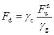
где gс - коэффициент условий работы, принимаемый равным:
1 - при испытании свай в непросадочных грунтах, а также в просадочных в условиях, оговоренных в п.4.7 и 4.10;
1,2 - при испытании свай в просадочных грунтах в случаях, оговоренных в п.4.8 а,б,г;
1,3 - при испытании свай в просадочных грунтах в случае, оговоренном в п.4.8 в;
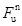
gg - коэффициент надежности по грунту принимаемый равном 1.
5.6. Значение коэффициента перехода от предельного значения средней осадки фундамента здания или сооружения Su,mt к осадке сваи, полученной при статических испытаниях с условной стабилизацией осадки, принимается по табл. 3.
Таблица 3
|
Коэффициент x для цементогрунтовых свай длиной 2-3 м при однорядном расположении и шаге более 1,5 м |
|
|
Пылевато-глинистые, в т.ч. просадочные по п.4.7 при |
|
|
JL < 0,2 |
0,4 |
|
0,2 £ JL <0,4 |
0,35 |
|
0,4 £ JL<0,6 |
0,25 |
|
Просадочные грунты по п.4.6 |
0,3 |
|
Просадочные грунты по п.4.10 |
0,2 |
6. Устройство фундаментов из цементогрунта.
Общие указания
6.1. Работы по устройству фундаментов из цементогрунта выполняются в соответствии с требованиями СНиП 3.02.01-83 с учетом положений настоящего раздела.
6.2. Устройство фундаментов из цементогрунта следует выполнять в соответствии с откорректированными по результатам опытных работ расчетными параметрами закрепления.
6.3. Расчетные параметры закрепления подразделяются на следующие группы:
1 - по составу: содержание цемента - С; влажность цементогрунтовой смеси Wm; содержание песка и др. добавок (подбираются в лаборатории); объем цементного раствора на сваю Vcs; В/Ц раствора; дополнительное количество воды для получения цементогрунтовой смеси с требуемым значением влажности Vw; глубина приямка hd, (определяются по приложению 2);
2 - по технологии (параметры, характеризующие режимы работы буросмесительной машины): скорость вращения рабочего органа w, об/мин; скорость перемещения рабочего органа Vs, м/мин; количество циклов погружения - К; скорость движения грунтосмесительной машины - Vl - м/мин; (cм. рекомендуемое приложение 3).
6.4. Устройство фундаментов из цементогрунта должно быть закончено не менее чем за месяц до начала промерзания грунта; запрещается устройство фундаментов в грунтах, не оттаявших после сезонного промерзания.
Свайные фундаменты
6.5. Для устройства цементогрунтовых свай применяют буросмесительные машины (рекомендуемые типы буровых машин для устройства свай из цементогрунта и их технические характеристики приведены в приложении 4).
6.6. Цементогрунтовые сваи устраивают следующими способами:
1А - механическое размельчение грунта в скважине и его увлажнение до получения "текучей" грунтовой массы при погружении рабочего органа Wm=(1,1 ÷ 1,3)WL
- введение раствора вяжущего или сухих его компонентов при извлечении или повторном погружении рабочего органа (при двухканальной системе подачи раствора и воды возможно совмещение этих этапов во времени);
1Б - механическое размельчение грунта и введение раствора вяжущего при погружении рабочего органа с получением "текучей" цементогрунтовой смеси с Wm=(1÷1,3)WL - ее перемешивание при извлечении рабочего органа;
1В - устройство лидерной скважины на всю длину сваи диаметром, соответствующим требуемым для ее изготовления объемам раствора или количеству цемента, которые определяются в соответствии с требованиями рекомендуемого приложения 2;
- заполнении лидерной скважины раствором или сухим вяжущим;
- разбуривание лидерной скважины до проектных размеров (требуемого диаметра) с подачей требуемого количества воды для получения смеси с заданной влажностью;
- перемешивание грунта с вяжущим при извлечении рабочего органа или повторном его погружении;
2 - механическая переработка грунта в скважине и введение
цементного раствора с получением "пластичных" цементогрунтовых смесей
при погружении рабочего органа ( 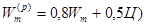
- перемешивание цементогрунтовой смеси при извлечении рабочего органа;
3 - бурение скважины, заполнение ее цементогрунтовой смесью с
влажностью - 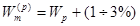
6.7. Цементный раствор готовится на площадке или завозится растворовозами. Для перевозки цементного раствора, предназначенного для устройства фундаментов из цементогрунта, следует применять авторастворовозы типа СБ-126 и др., имеющие побудитель.
6.8. После изготовления сваи покрываются защитными материалами (опилки, рыхлый грунт, песок), который в первые 7 суток постоянно увлажняется.
Устройство ростверка следует начинать не ранее чем через 7 суток после изготовления свай.
6.9. Следует, как правило, применять однорядное расположение свай и безростверковое опирание цокольных панелей на сваи. Необходимость применения распределительных подушек из бетона определяется расчетом на смятие, проводимым как для обычных бетонов. Минимальная толщина подушки - 150 мм.
Ленточные фундаменты
6.10. Для устройства ленточных фундаментов из цементогрунта буросмесительным способом применяют грунтосмесительные машины типа АГ-392М, МГ-1 конструкции НИИСПа Госстроя УССР, технические характеристики которых приведены в справочном приложении 4.
Опытные работы
6.12. Опытные работы включают;
- изготовление пробных свай (лент);
- контрольные работы по оценке качества пробных свай (лент).
6.13. Выполнение опытных работ фиксируется актом, в котором указываются результаты опытных работ, на основе которых должна быть откорректирована рабочая документация до начала основных работ.
6.14. В акте на проведение опытных работ указываются:
механизмы и оборудование; способ устройства фундаментов из цементогрунта; расчетные параметры закрепления по проекту; результаты контрольных работ по оценке качества пробных свай (лент); изменения, рекомендуемые для внесения в рабочую документацию по результатам опытных работ.
6.15. Опытные работы при однородном напластовании грунтов выполняются в одном, а при разнородном напластовании или значительном изменении влажности грунтов - не менее, чем в двух характерных пунктах строительной площадки. Количество свай, устраиваемых принятым способом, должно быть не менее 3, длина ленты - не менее 3 м.
6.16. Допускается использовать сваи и участки ленты, изготовленные в ходе опытных работ, в качестве фундаментов при условии получения всех расчетных, конструктивных и др. требований, предъявляемых к фундаментам.
6.17. Опытные работы при изготовлении свай и лент способом, предусматривающим приготовление цементогрунтовой смеси в смесительных установках, включают: оценку качества цементогрунтовой смеси (однородность, удобоукладываемость, влажность и др.), прочности на сжатие цементогрунта.
7. Контроль качества и приемка выполненных работ
7.1. Контроль качества при устройстве фундаментов из цементогрунта разделяется на операционный, осуществляемый в ходе выполнения работ, и приемочный.
7.2. Операционный контроль включает:
- входной контроль расчетных параметров закрепления:
Vcs, В/Ц, hd, Wm, w, Uw, Vs, VW - отклонение от проектных значений должно составлять не более 10%;
- ведение журнала производства работ (автоматическая запись параметров работы мамины при наличии соответствующих приборов).
7.3. Контрольные работы по оценке качества цементогрунта готовых фундаментов на соответствие его проектным требованиям следует выполнять отбором кернов бурением или образцов материала фундаментов при вскрытии шурфов.
7.3.1. К отбору кернов приступают не ранее чем через двое суток после завершения работ по изготовлению свай (лент);
7.3.2. Отбор кернов в сваях и лентах производят через 0,5-1 м (по длине сваи и высоте ленты) в центре и на расстоянии 2/3 от центра.
7.3.3. При контрольных работах производится оценка качества не менее 3 свай из 100 готовых. При устройстве ленточных фундаментов контрольные работы проводятся через каждые 50 м ленты.
7.3.4. При контрольном бурении производится осмотр и описание кернов с визуальной оценкой однородности смешения грунта с цементом, устанавливается количество видимых неразрушенных агрегатов грунта (%) и их размеры. Материалы визуального осмотра заносятся в журнал производства работ.
7.3.5. Отобранные при контрольном бурении образцы испытывают в соответствии с требованиями раздела 3 настоящих Норм.
7.4. Приемка работ осуществляется комиссией в соответствии с требованиями СНиП III-3-81 на основе сопоставления проектной, исполнительной и контрольной документации.
7.5. Приемочной комиссии представляют следующие документы:
- акт на опытные работы; журнал производства работ; исполнительный чертеж фундамента здания; материалы опытных работ; сведения о марке и активности используемого цемента; материалы контрольных работ; ленты автоматической записи работы буросмесительной машины (при наличии).
7.6. При устройстве фундаментов из цементогрунта должны соблюдаться правила по технике безопасности и охране труда в строительстве в соответствии с требованиями СНиП III-4-80.
Приложение 1
(рекомендуемое)
Добавки, применяемые для улучшения свойств цементогрунта
|
Добавка |
Количество добавки в % от массы сухого грунта |
Область применения |
|
Известь (ГОСТ 9179-59) |
1-3 |
Кислые грунты с рН 6, переувлажненные грунты, при содержании частиц размером менее 0,005 мм более 30% |
|
Хлористый кальций СаСl2 |
0,5-2 |
Кислые грунты с рН < 6, переувлажненные, гумусированные песчаные, при пониженных температурах |
|
Гипс строительный (ГОСТ 125-57) |
2-4 |
Переувлажненные грунты |
|
СДБ (ОСТ 81-79-74) |
0,1-0,25 |
Повышение однородности цементогрунтовых смесей за счет увеличения их подвижности |
|
С-3 (суперпластификатор) (ТУ-6-14-19-252-79) Минхимпрома СССР |
0,1-1 |
Повышение прочности, морозостойкости, удобоукладываемости |
|
ГКЖ-94 (ГОСТ 10834-76) |
0,3-0,7 |
Повышение прочности, морозостойкости |
|
ГКЖ-10, 11 (ТУ-6-02-696-72) |
0,3-0,7 |
Повышение прочности, морозостойкости |
|
Полиизоцианат (ТУ-6-03-375-75) |
2-10 |
Повышение прочности, морозостойкости, стойкость к агрессивным средам |
|
ПГ-нефелиновый гудрон (ТУ-18-2-49-83) |
0,05-0,2 |
Повышение прочности, морозостойкости |
|
ВНГ (ТУ-18-2-49-83) |
0,05-0,2 |
Повышение прочности, морозостойкости |
Приложение 2
(рекомендуемое)
Расчетные технологические параметры изготовления свай из цементогрунта
|
Способ 1А |
||
|
глубина приямка, 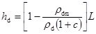 |
плотность цементогрунтовой смеси в сухом состоянии, т/м3 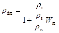 |
|
|
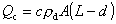 количество цемента на сваю, т |
количество раствора с В/Ц -а на сваю, м3 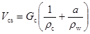 |
|
|
дополнительное количество воды для получения смеси с Wм, м3 |
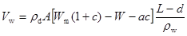 |
|
|
Способ 1Б |
||
|
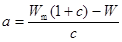 водоцементное отношение раствора |
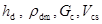 - так же, как для способа 1А |
|
|
Способ 1В |
||
|
диаметр приямка, м 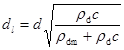 |
количество воды на сваю длиной L при разбуривании, м3 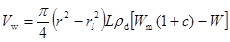 количество цемента, т 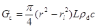 |
|
|
Способ 2 |
||
|
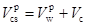 количество раствора, м3 |
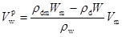 количество воды для приготовления раствора, м3 |
|
|
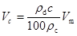 |
количество цемента, т |
|
|
Способ 3 |
||
|
В случаях «пластичных» смесей аналогично способу 2, а при «текучих» смесях - по способу 1. |
||
Приложение 3
(рекомендуемое)
Таблица 1
Параметры работы буросмесительной машины
|
Режимы работы |
Песок |
Суглинок |
Лессовые грунты (супесь, суглинок) |
|
Скорость вращения рабочего органа, w, об./мин |
50-80 |
40-60 |
80-120 |
|
Скорость подачи рабочего органа, Vw мм/об |
8-10 |
5-8 |
5-10 |
|
Скорость перемещения рабочего органа, Vs мм/мин. |
0,4-0,8 |
0,2-0,5 |
0,4-1,2 |
|
Количество циклов погружения-извлечения рабочего органа |
1-2 |
2-3 |
1-3 |
Таблица 2
Параметры работы грунтосмесительной машины при устройстве ленточных фундаментов из цементогрунта буросмесительным способом
|
Число пластичности |
Скорость движения машины: Ul , м/мин. |
|
|
Пески и супеси |
0-7 |
0,2-0,25 |
|
Суглинки |
7-12 |
0,12-0,2 |
|
Суглинки |
12-15 |
0,09-0,12 |
Приложение 4
(рекомендуемое)
Техническая характеристика буровых установок для устройства свай из цементогрунта.
|
Характеристики |
Марки буровых установок |
|||||||
|
1БА-15В |
2ВА-15 |
1БА-15К |
РА-15 |
СП-74 |
СО-2 |
ЛБУ-50М |
БМ-302 |
|
|
Мощность, используемая для бурения, кВт. |
80 |
2х80 |
75 |
75 |
110 |
90 |
75 |
50 |
|
Вращающий момент, кН.м |
7 |
10 |
10 |
70 |
20 |
10 |
10 |
5 |
|
Ход подачи штанги, м |
12 |
13,5 |
8 |
8 |
10 |
2х15 |
30 |
3,0 |
|
Тип подачи |
свободная |
гидравлическая |
лебедка |
лебедка |
гидравлическая фикс. |
лебедка |
гидравлическая |
гидравлическая |
|
Число оборотов вращателя, об/мин |
65, 130 245 |
65, 130 245 |
9-245 |
52-30 |
90-100 |
20-45 |
14-100 |
100-150 |
|
Базовая машина |
МАЗ-500 |
МАЗ-500 |
МАЗ-500 |
МАЗ-500 |
КрАЗ-257 |
ДЭК-251 |
ЗИЛ-157 |
ЗИЛ-66 |
Техническая характеристика грунтосмесительной машины АГ-392М (конструкции НИИСПа Госстроя УССР) для устройства ленточных фундаментов из цементогрунта, устраиваемых буросмесительным способом
Таблица 2
|
Характеристика |
Значение |
|
Размеры устраиваемого фундамента, м: |
|
|
ширина |
0,2-0,6 |
|
высота |
0,4-2 |
|
Производительность, м/ч |
до 16 |
|
Пределы рабочих скоростей передвижения, м/ч |
5-30 |
|
Скорость вращения шнеков, об/мин: |
|
|
смесительного |
80-120 |
|
уплотняющего |
30-60 |
|
Максимально потребляемая мощность, кВт, для шнеков: |
|
|
смесительного |
до 25 |
|
уплотняющего |
до 10 |
|
Габаритные размеры в транспортном положении, мм: |
|
|
высота |
3500 |
|
длина |
5200 |
|
ширина |
2130 |
|
Масса навесного оборудования, кг |
1300 |
|
Количество обслуживающего персонала, чел. |
1 |
|
Базовая машина |
ЭТЦ-202 |
Приложение 5
(справочное)
Основные буквенные обозначения
W - влажность грунта природного сложения;
Wm - влажность цементогрунтовой смеси;
rdm - плотность цементогрунтовой смеси в сухом состоянии;
rc - плотность частиц цемента;
rw- плотность воды, принимаемая равной 1 т/м3;
rs- плотность частиц грунта;
hd - глубина приямка;
r - диаметр сваи;
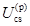
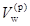
С - количество цемента, % от массы сухого грунта;
Gc - количество цемента, т/м (т/м3);
w - скорость вращения рабочего органа;
Uw - скорость подачи рабочего органа за один оборот;
Us- скорость перемещения рабочего органа, м/мин;
К - количество циклов погружения-извлечения рабочего органа;
a - водоцементное отношение раствора;
L- длина цементогрунтовой сваи;
A - площадь сечения сваи;
Wм - максимальная молекулярная влагоемкость.
Таблица 2
|
Глубина расположения нижнего конца сваи или подошвы ленточного фундамента при определении R или средняя глубина расположения слоя грунта при определении t, м |
Расчетное сопротивление R, кПа, для лессовых просадочных грунтов в состоянии полного водонасыщения (Sr ³0,8) при коэффициенте пористости е в слое, равном 2b или 2d под подошвой; расчетное сопротивление t кПа, по боковой поверхности сваи (ленты) для лессовых просадочных грунтов в состоянии полного водонасыщения (Sr ³0,8) при среднем коэффициенте пористости e слоя грунта, прорезаемого боковой поверхностью равном: |
|||||||
|
e = 0,75 |
e = 0,82 |
e = 0,89 |
e = 0,97 |
|||||
|
R |
t |
R |
t |
R |
t |
R |
t |
|
|
1 |
- |
18 |
- |
16 |
- |
14 |
- |
12 |
|
2 |
350 |
19 |
300 |
17 |
250 |
15 |
200 |
13 |
|
3 и более |
360 |
20 |
310 |
18 |
260 |
16 |
210 |
14 |
Примечания: 1. b и d ширина ленточного фундамента и диаметр сваи соответственно.
2. Для промежуточных значений коэффициента пористости e значения R и t принимаются по линейной интерполяции.
СОДЕРЖАНИЕ